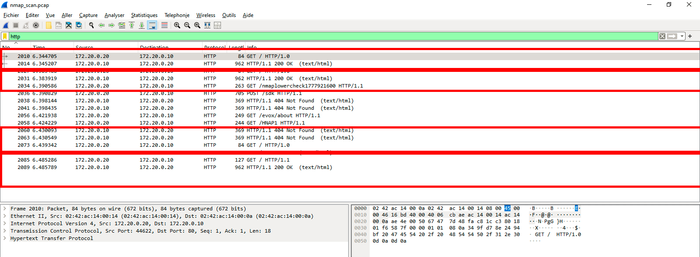
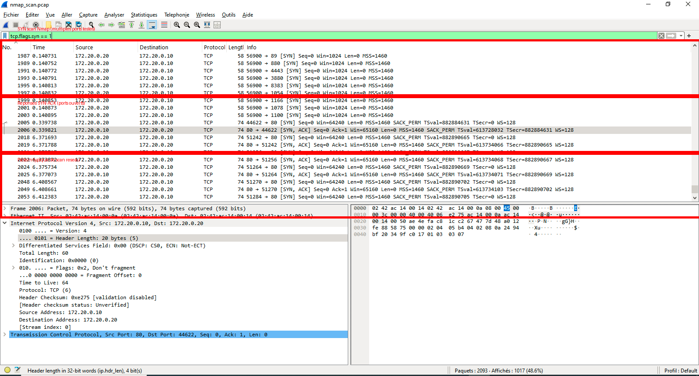

HTTP Traffic
Analyse d’une communication HTTP visible en clair.
Nmap Scan
Détection de paquets SYN caractéristiques d’un scan réseau.
Docker Lab
Environnement isolé et reproductible avec Docker Compose.
Captures Wireshark

Capture HTTP
Requête GET visible en clair et réponse serveur HTTP 200 OK.

Détection Nmap
Paquets SYN envoyés vers plusieurs ports : pattern typique de reconnaissance réseau.